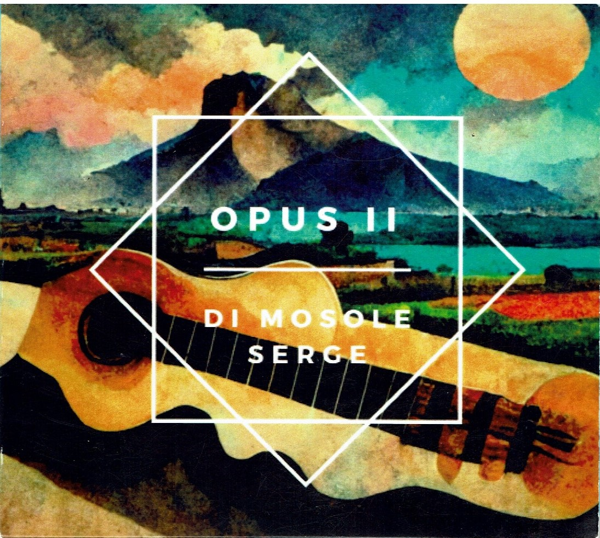
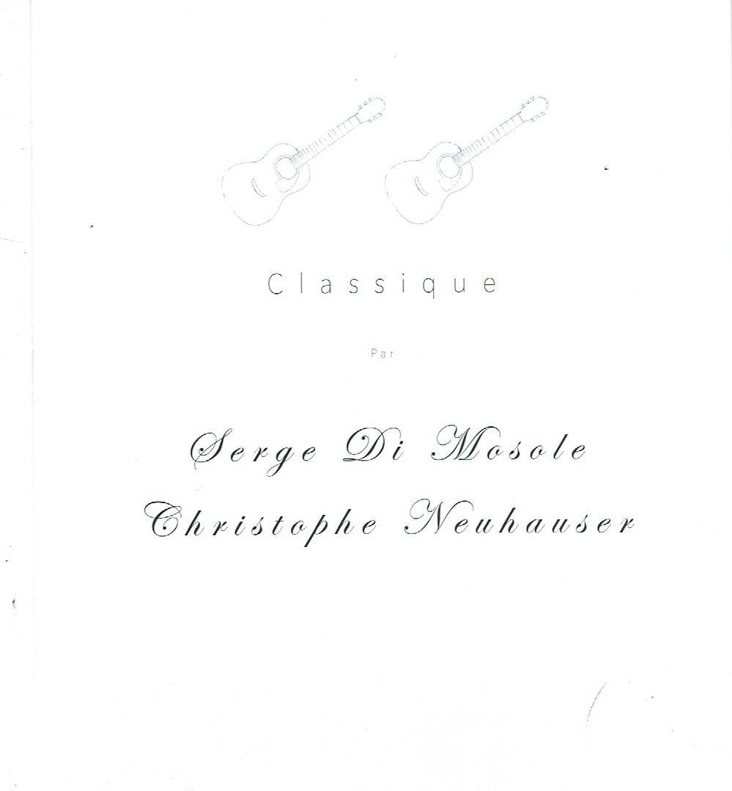
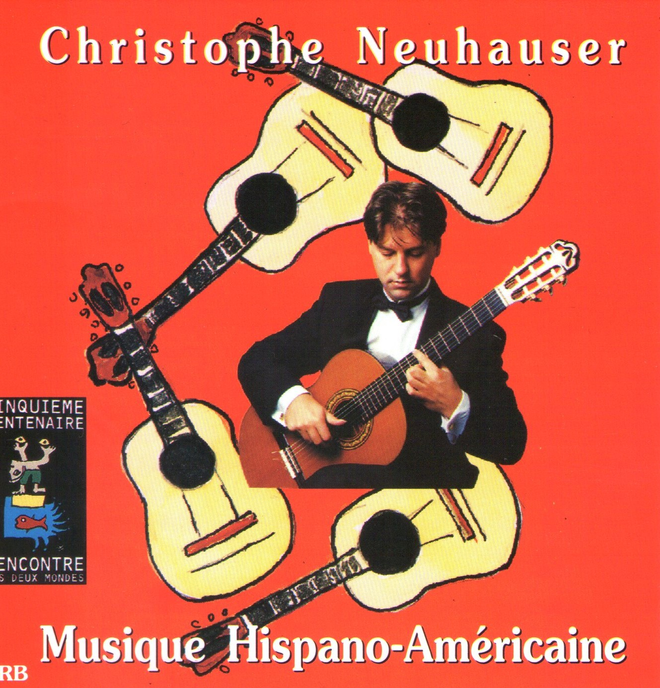

Classique
De Haendel, Bach, Scarlatti, Soler et Sor aux grandes pages du répertoire pour guitare et musique de chambre.
Deux guitares en dialogue pour un voyage musical à travers les siècles, entre élégance classique, passion espagnole et couleurs sud-américaines.
Retrouvez le Duo Di Mosole–Neuhauser en concert demain à Font-Romeu.

Un programme pour deux guitares autour de Haendel, Sor, Granados, De Falla, Piazzolla, Bellinati et Gnattali.
Serge Di Mosole et Christophe Neuhauser réunissent leurs expériences de guitaristes classiques dans un programme conçu pour le concert, les festivals, les lieux patrimoniaux et les tournées.
Leur répertoire traverse plusieurs siècles et rapproche les grandes pages de la tradition classique, l’Espagne et l’Amérique latine. Le duo accorde également une place à la création, aux compositions originales et aux arrangements.
Cette formule intimiste permet une grande proximité avec le public tout en conservant une vraie richesse de couleurs, de dynamiques et de contrastes.
Serge Di Mosole
Guitare • Composition
Premier Prix de musique de chambre et Médaille d’Or de guitare au CNR de Toulouse. Il perfectionne son art auprès du maître cubain Manuel Barrueco, dont il obtient le Diplôme international d’interprétation. |
Christophe Neuhauser
Guitare • Arrangements
Premier Prix de guitare du CNSM de Paris dans la classe du maître Alexandre Lagoya. Il perfectionne son art auprès de deux grandes figures internationales de la guitare, Alirio Diaz et Léo Brouwer. |
Formats : concerts, festivals, salons de musique, événements patrimoniaux et tournées.
Un programme modulable, pensé pour s’adapter à l’acoustique et à l’identité de chaque lieu.
De Haendel, Bach, Scarlatti, Soler et Sor aux grandes pages du répertoire pour guitare et musique de chambre.
Granados, De Falla et l’élégance d’une écriture intimement liée aux couleurs de la guitare.
Piazzolla, Gnattali, Bellinati, Cardoso et d’autres compositeurs qui enrichissent le programme de rythmes et de contrastes.
Quelques repères récents du parcours artistique du Duo.
« La guitare classique pour le Duo Di Mosole–Neuhauser »
Une sélection d’enregistrements qui témoigne des parcours de Serge Di Mosole et Christophe Neuhauser, ainsi que de leur travail commun.

Serge Di Mosole
Serge Di Mosole

Serge Di Mosole • Christophe Neuhauser
Serge Di Mosole

Christophe Neuhauser

Le Duo Di Mosole–Neuhauser est soutenu par RC Strings, fabricant espagnol de cordes pour guitare classique.
Deux accès directs pour les programmateurs, festivals et partenaires.
Écoutez une sélection d’enregistrements du Duo Di Mosole–Neuhauser.
Ouvrir SoundCloudRetrouvez les vidéos et contenus de présentation du Duo.
Voir les vidéosPour une programmation, un festival, un salon de musique, une tournée ou un événement patrimonial, contactez-nous directement.
Serge Di Mosole • Christophe Neuhauser
Serge Di Mosole :
Guitare • Composition
Christophe Neuhauser :
Guitare • Arrangements
France • Concerts • Festivals • Salons • Tournées